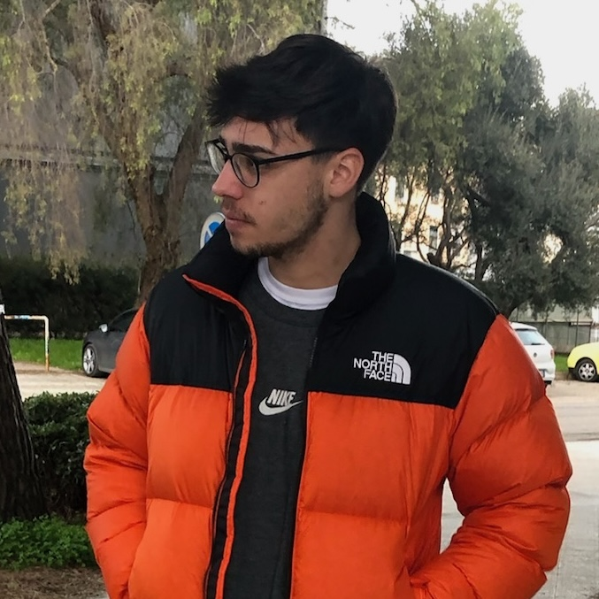

Antonio Silvestre

Contatti
- Traversa 1 Tratturo San Lorenzo, Troia
- antonio.silvestre99@hotmail.it
- +39 340 588 2458
- www.linkedin.com/antonio-silvestre
Coordinatore efficace con eccellenti capacità di collaborazione, formazione e comunicazione, orientato alla
creazione di relazioni solide e a risultati concreti
Soft Skill
- Problem solving
- Capacità di lavorare in team
- Comunicazione efficace
- Gestione dello stress e lavoro sotto pressione
- Gestione del tempo e delle priorità
- Orientamento all'utente e all'esperienza finale
- Autonomia operativa
- Adattabilità e flessibilità
- Affidabilità e senso di responsabilità
- Apprendimento rapido
- Attenzione ai dettagli
Lingue
- Italiano: Madrelingua
- Inglese: B2
Formazione
- Diploma di maturità scientifica
- Liceo Scientifico "Alessandro Volta", Foggia | 2018
- Laurea Triennale - Informatica
- Università degli Studi di Bari "Aldo Moro" | 2026
Esperienza lavorativa
- Cameriere
- Pane e Salute, Orsara di Puglia (FG) | 2016 - 2019
- Cameriere
- Villa Jamele, Orsara di Puglia (FG) | 2019
- Cameriere
- New Livingstone Pub, Troia (FG) | 2020 - 2021
- Cameriere
- Pizzeria Joseph, Bari | 2021 - 2022
- Cameriere
- Il Bugigattolo, Bari | 2022
- Responsabile di sala / Gestione social
- Canarùte Poggiofranco, Bari | 2021 - 2025
- Cameriere / Gestione social
- Canarùte Bistrot, Bari | 2024 - 2025
- Cameriere
- Gallo Matto, Bari | 2025
Competenze tecniche
- Programmazione orientata agli oggetti
(Java, C#, Python, TypeScript) - Utilizzo di Unity
- Progettazione di meccaniche di gioco
- Debugging e risoluzione di problemi
- Versionamento del codice
- Utilizzo di IDE
(Visual Studio Code, Ecliplse, NetBeans) - Creazione contenuti per social, grafiche, stampe
(Canva, Adobe Express, Illustrator) - Prototipazione e sviluppo di progetti personali
Progetti
- Uniperdida | Java
- Realizzazione di un gioco in Java di tipo avventura testuale per l'esame di Metodi Avanzati di Programmazione.
- Who? | Unity, C#
- Realizzazione tramite Unity e C# di una demo di un gioco di tipo Open World per l'esame di Sviluppo di Videogiochi.
- Learners Runners | Unity, C#
- Realizzazione tramite Unity e C# di un endless runner educativo per la tesi di Laurea in Informatica.
- canarutebistrot.com
- Sito vetrina di Canarùte Bistrot con gestione tramite credenziali del database contenente il menu